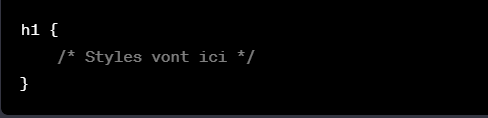
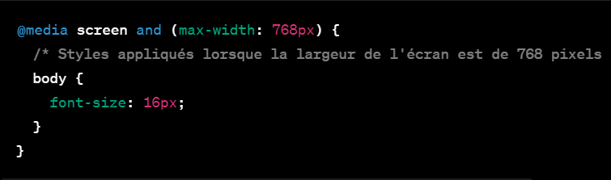

study with me with focus
CSS
introduction
impact de css sur html
les attribus en css
psuedo-classes/elements
animation/
adaptation..
introduction

CSS, ou Cascading Style Sheets (Feuilles de style en cascade), est un langage de feuilles de style utilisé pour décrire la présentation d'un document écrit en HTML (HyperText Markup
Language) ou XML (eXtensible Markup Language). Il a été développé pour séparer la structure et le contenu d'une page web de sa présentation visuelle, permettant ainsi aux développeurs
web de contrôler avec précision l'apparence et le style des éléments d'une page.
La séparation des préoccupations (séparation de la structure et de la présentation) est l'un des principes
fondamentaux de la conception web moderne, facilitant la maintenabilité, la flexibilité et la cohérence des sites web à grande échelle.
Le fonctionnement de CSS repose sur des règles de style qui définissent comment un élément HTML particulier doit être affiché. Ces règles sont généralement spécifiées dans un fichier externe (extension .css) et sont ensuite liées aux documents HTML à l'aide de balises <link> ou de déclarations intégrées directement dans la balise HTML <style>.
Une règle CSS se compose de deux parties principales : le sélecteur et la déclaration. Le sélecteur identifie les éléments HTML auxquels la règle s'applique, tandis que la déclaration spécifie les propriétés de style à appliquer à ces éléments. Par exemple, pour définir la couleur du texte d'un paragraphe en rouge, on peut utiliser le sélecteur "p" pour cibler tous les paragraphes et déclarer la propriété "color" avec la valeur "red".
CSS offre une multitude de propriétés de style telles que la couleur, la police, la taille, la marge, le positionnement, les bordures, les arrière-plans, les animations, les transformations et bien d'autres. Ces propriétés permettent aux développeurs de personnaliser l'apparence des éléments HTML de manière détaillée.
En plus des sélecteurs de base (sélection par balise, classe, identifiant), CSS propose des sélecteurs avancés comme les sélecteurs d'enfant, les sélecteurs adjacents, les pseudo-classes et les pseudo-éléments. Ces fonctionnalités avancées permettent de cibler spécifiquement des éléments dans des contextes plus complexes, ce qui offre une grande souplesse dans la conception des mises en page et des styles.
Avec l'évolution des technologies web, CSS a également intégré des fonctionnalités pour rendre les sites web adaptatifs et responsives. Les Media Queries, par exemple, permettent d'appliquer des styles spécifiques en fonction des caractéristiques de l'appareil utilisé, comme la largeur de l'écran, offrant ainsi une expérience utilisateur optimisée sur différents périphériques tels que les ordinateurs de bureau, les tablettes et les smartphones.
En résumé, CSS est un outil essentiel pour les développeurs web, offrant un contrôle précis sur l'aspect visuel des pages web. En combinant CSS avec HTML et d'autres technologies front-end comme JavaScript, il est possible de créer des sites web dynamiques, interactifs et esthétiques, améliorant ainsi l'expérience utilisateur et la présentation des contenus en ligne.
impact de css sur html
L'impact de CSS sur HTML est significatif et multiple, influençant de manière positive la façon dont les pages web sont structurées et présentées. Voici quelques-uns des principaux impacts de CSS sur HTML :
- Séparation de la structure et de la présentation : CSS permet de séparer complètement la structure (HTML) de la présentation (CSS) d'une page web. Cela améliore la maintenabilité du code en permettant aux développeurs de modifier facilement l'apparence d'un site sans altérer sa structure sous-jacente.
- Amélioration de la lisibilité du code : En utilisant des fichiers CSS externes, le code HTML devient plus clair et moins encombré, car il se concentre principalement sur la structure et le contenu de la page sans mélanger les informations de style.
- Flexibilité et contrôle du design : CSS offre une large gamme de propriétés de style qui permettent aux développeurs de contrôler avec précision l'apparence des éléments HTML. Cela inclut la gestion des couleurs, des polices, des marges, des tailles, des bordures, du positionnement et bien plus encore.
- Consistance et cohérence : En appliquant des règles CSS cohérentes à travers toutes les pages d'un site, il est possible de maintenir une apparence visuelle uniforme, assurant ainsi une expérience utilisateur cohérente.
- Adaptabilité et responsivité : Grâce à des fonctionnalités telles que les Media Queries, CSS permet de créer des mises en page et des styles qui s'adaptent aux différentes tailles d'écran et aux divers appareils (ordinateurs de bureau, tablettes, smartphones), offrant ainsi une expérience utilisateur optimale sur tous les supports.
- Accessibilité améliorée : En séparant la structure du contenu et de la présentation, les développeurs peuvent créer des sites web plus accessibles. Cela signifie qu'ils peuvent ajuster le contenu pour répondre aux besoins spécifiques des utilisateurs (par exemple, en augmentant la taille du texte pour une meilleure lisibilité).
- Économie de temps : En appliquant des styles via CSS, les modifications de conception peuvent être apportées rapidement et facilement sur l'ensemble d'un site web sans avoir à modifier chaque élément individuellement dans le code HTML.

les attributs en css
1-les syntaxe de css
La syntaxe de base en CSS est relativement simple. Voici une explication succincte de la syntaxe CSS :
Sélecteur : Les règles CSS commencent généralement par un sélecteur qui cible les éléments HTML que vous souhaitez styliser. Par exemple :

Dans cet exemple, h1 est le sélecteur qui cible tous les éléments <h1> du HTML.
Propriétés et valeurs : À l'intérieur des accolades {} après le sélecteur, vous déclarez les propriétés CSS que vous souhaitez appliquer à ce sélecteur. Chaque propriété est suivie de deux points : et d'une valeur. Par exemple :
Dans cet exemple, font-size et color sont des propriétés, et 24px et #333 sont les valeurs appliquées à ces propriétés respectives.
Commentaires : Les commentaires en CSS sont inclus entre /* et */ et ne sont pas interprétés par le navigateur. Ils servent à documenter le code :

Classes et IDs : En plus des sélecteurs d'éléments (h1, p, etc.), vous pouvez cibler des classes et des IDs spécifiques en utilisant . pour les classes et # pour les IDs :

Groupement des sélecteurs : Vous pouvez regrouper plusieurs sélecteurs pour appliquer les mêmes styles à différents éléments :

2-les attributs
!vous pouvez essayer ces code pour mieux comprendCertaines propriétés CSS sont utilisées plus fréquemment que d'autres en raison de leur importance dans la conception et la mise en page des sites web. Voici une liste de 30 attributs CSS très couramment utilisés :
- color : Définit la couleur du texte.
- font-family : Spécifie la famille de polices utilisée pour le texte.
- font-size : Détermine la taille de la police.
- font-weight : Indique l'épaisseur ou le poids de la police (normal, bold, etc.).
- text-align : Aligne le texte à gauche, à droite, au centre ou justifié.
- background-color : Définit la couleur d'arrière-plan d'un élément.
- margin : Définit l'espace extérieur autour d'un élément.
- padding : Définit l'espace intérieur autour du contenu d'un élément.
- border : Crée une bordure autour d'un élément avec des propriétés comme la largeur, le style et la couleur.
- display : Définit le mode d'affichage d'un élément (block, inline, flex, etc.).
- width : Spécifie la largeur d'un élément.
- height : Spécifie la hauteur d'un élément.
- float : Contrôle le positionnement d'un élément par rapport aux autres éléments.
- position : Définit le type de positionnement (relative, absolute, fixed, etc.).
- top, bottom, left, right : Propriétés utilisées pour déplacer et positionner des éléments positionnés.
- = z-index : Détermine l'empilement des éléments positionnés les uns par rapport aux autres.
- text-decoration : Ajoute ou supprime des décorations (soulignement, barré, etc.) du texte.
- line-height : Définit la hauteur de ligne dans un texte.
- box-shadow : Ajoute une ombre à un élément.
- border-radius : Arrondit les coins d'un élément.
- opacity : Définit la transparence d'un élément.
- overflow : Contrôle la façon dont le contenu dépasse les limites d'un élément.
- cursor : Change le curseur de la souris lorsqu'il survole un élément.
- text-transform : Modifie la casse du texte (majuscules, minuscules, capitales, etc.).
- transition : Ajoute des transitions animées entre les états d'un élément.
- flexbox properties (flex-direction, justify-content, align-items) : Utilisées pour le positionnement flexible des éléments enfants dans un conteneur flex.
- grid properties (grid-template-columns, grid-template-rows, grid-gap) : Pour créer des mises en page en grille.
les pseudo-classes/elements
les pseudo-classes et pseudo-éléments en CSS sont des sélecteurs utilisés pour cibler des éléments HTML spécifiques dans des états particuliers ou pour insérer du contenu dans le DOM sans avoir à modifier le balisage HTML. Voici des explications détaillées sur chacun :
Pseudo-classes :
Les pseudo-classes sont utilisées pour définir le style d'un élément HTML dans des états spécifiques ou en fonction de son interaction avec l'utilisateur. Elles sont représentées par deux points (:) suivis du nom de la pseudo-classe(syntaxe: tag/class/id:psuedo-classe{propriétés;}). Par exemple :
:hover : Applique un style lorsqu'un utilisateur survole un élément avec le curseur de la souris.
:active : Applique un style à un élément lorsqu'il est activé (lorsque l'utilisateur clique dessus).
:focus : Applique un style à un élément lorsqu'il reçoit le focus, généralement via le clavier ou
un dispositif similaire.
:first-child : Cible le premier enfant d'un élément parent.
:nth-child() : Sélectionne des éléments en fonction de leur position dans un groupe, par exemple
:nth-child(odd) pour sélectionner les éléments impairs.
Pseudo-éléments :
Les pseudo-éléments permettent d'ajouter du contenu ou de styliser des parties spécifiques d'un élément, sans avoir à modifier le balisage HTML. Ils sont représentés par deux points doubles (::) suivis du nom du pseudo-élément. Par exemple :
::before : Permet d'insérer du contenu avant le contenu de l'élément ciblé.
::after : Permet d'insérer du contenu après le contenu de l'élément ciblé.
::first-line : Permet de sélectionner la première ligne de texte à l'intérieur d'un élément.
::first-letter : Cible la première lettre d'un élément pour y appliquer un style spécifique
animation/adaptation...
, il existe d'autres règles spéciales en CSS comme @media et @keyframes. Voici quelques-unes des règles CSS spéciales qui sont fréquemment utilisées dans le développement web :
@media : Il s'agit d'un identifiant utilisé en CSS pour appliquer des styles spécifiques en fonction des caractéristiques du support sur lequel la page web est affichée
. Les règles @media permettent de définir des conditions basées sur les propriétés du média, telles que la taille de l'écran, la largeur de la fenêtre du navigateur, l'orientation de l'appareil, etc.
Ces règles sont généralement utilisées pour créer des conceptions responsives, c'est-à-dire des mises en page qui s'adaptent et répondent aux différentes tailles d'écran. Par exemple :

Dans cet exemple, les styles définis à l'intérieur des règles @media s'appliquent uniquement lorsque la condition spécifiée est vraie. Ici, la règle s'applique lorsque l'écran a une largeur maximale de 768 pixels.
@keyframes : Peut-être vouliez-vous mentionner @keyframes ? C'est une règle CSS utilisée pour définir des animations. Les animations en CSS sont créées en définissant une série d'étapes qui décrivent les changements progressifs de l'état d'un élément au fil du temps. La règle @keyframes permet de spécifier ces différentes étapes ou keyframes. Par exemple :
-
@font-face : Permet aux développeurs web d'utiliser des polices de caractères spécifiques qui ne sont pas installées sur l'ordinateur de l'utilisateur en définissant des polices téléchargeables depuis le serveur.
@import : Utilisée pour importer des feuilles de style externes dans un fichier CSS. Cela permet de regrouper plusieurs fichiers CSS en un seul pour faciliter la gestion du code.
@supports : Permet de vérifier si le navigateur prend en charge certaines propriétés CSS spécifiques ou des fonctionnalités avant d'appliquer des styles, permettant ainsi une meilleure gestion de la compatibilité entre navigateurs.
@namespace : Utilisé pour définir des espaces de noms pour les sélecteurs CSS, principalement utilisé en relation avec XML et XHTML.
@page : Utilisé pour définir les styles pour des médias spécifiques, tels que l'impression, pour contrôler l'apparence des pages lorsqu'elles sont imprimées.
@counter-style : Permet de définir de nouveaux styles de numérotation pour les compteurs CSS utilisés avec les propriétés counter-increment et counter-reset.
@viewport : Utilisé pour définir des propriétés de la vue (viewport) pour les appareils mobiles et les navigateurs, permettant de contrôler le dimensionnement initial, le niveau de zoom et d'autres comportements de la vue.